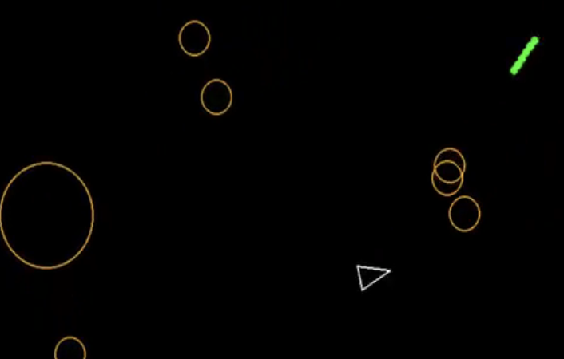
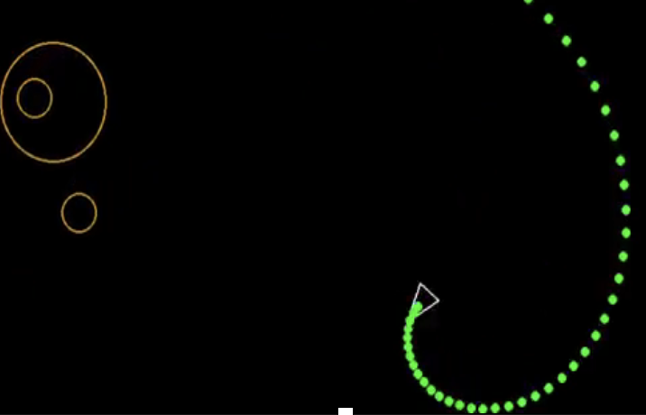
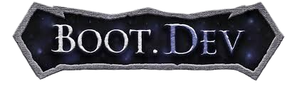
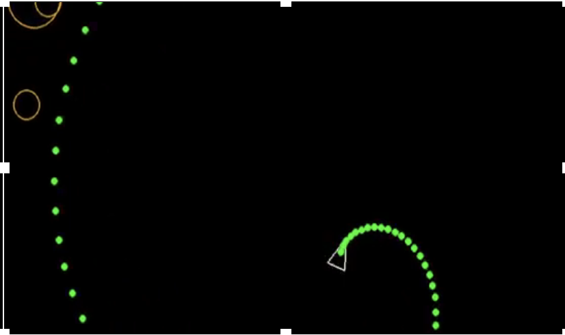
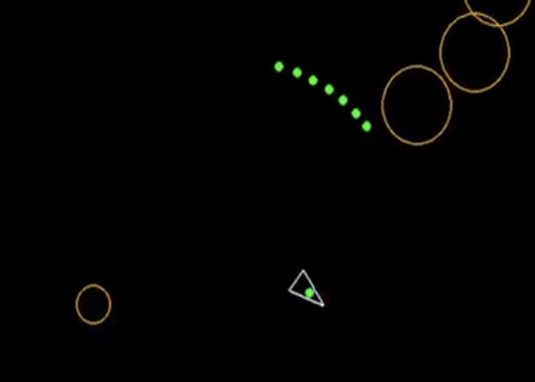
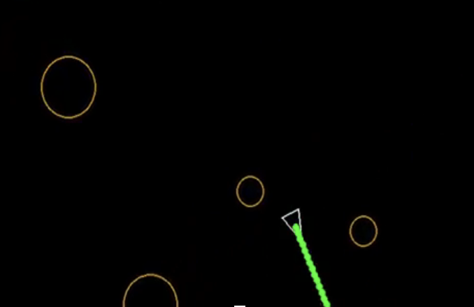
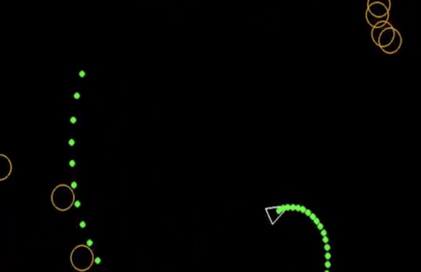
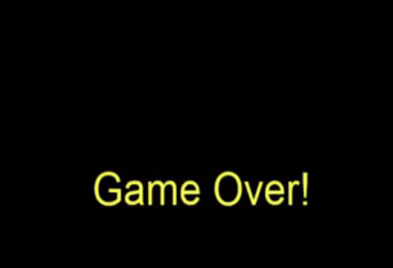

This project was created as part of the Boot.dev curriculum for learning backend engineering and mastering Python. The project comes after the initial lessons for Python to learn about using libraries and modules. The goal of this project was to learn how to use pygame to create a simple python game.
This video demonstrates the Asteroid Game I created using Python and Pygame from the Boot.dev tutorial. It shows the overpowered shots as well as the regular style shots. It also shows the custom end screen I created and added to the game.


As part of the back-end developer path on Boot.dev there are projects to test out what you have been learning and use it in a functional manner. Following the courses on "Learn to Code in Python", "Learn Linux" "Learn Git" "Learn Object Oriented Programming in Python" is the "Build Asteroids using Python and Pygame"
These screenshots show the main layout of the game. It starts with a triangle representing the player's ship in a black field. Orange circles appear randomly, representing the asteroids, which bounce around the screen. The player can rotate using the arrow keys and shoot using the space bar. If the player shoots an asteroid it divides itself into smaller asteroids. This division increases the total number of asteroids on the screen, making the game more complex. Asteroids disappear when they get too small. The game ends when an asteroid touches the player's ship.

Boot.dev is an online learning platform that focuses on teaching coding and development skills. It offers a variety of courses and projects designed to help learners build practical skills in web development, backend development, and other programming areas. The platform emphasizes hands-on learning through interactive coding exercises and real-world projects.
Boot.dev focuses on back-end skills, since they see this as an area that is often overlooked on other training platforms. Most training programs around focus on front-end and may add in some full-stack elements. Boot.dev's lessons help users learn about back-end development by having them work through exercises as if they are building a game. Each chapter has a lesson that builds skills, often including challenges. Boot.dev also recently released a training ground where users can continue practicing skills after completing a section's lessons and challenges
Boot.dev also includes projects every few lessons to help users put what they are learning together. While the lessons are completed online on Boot.devs servers the projects are developed on the user's computer, with sections put through validation tests on Boot.dev. This allows the user to develop skills in project setup and problem-solving.


The guided tutorial starts by teaching you to set up the development environment on the desktop. I learned skills in creating a virtual environment and ensuring Python was correctly configured on my computer. I also had to download the Pygame extension and ensure it ran correctly within the virtual environment.
During this part, I learned about virtual environments and their importance: they prevent external libraries or add-ons from one project from conflicting with others on the main computer. Keeping a clean workspace with virtual environments set up for each project ensures it only has what is needed.
Once the environment was set up, I followed the tutorial to create the game. The tutorial starts with us setting up the main.py file so our program has a file to run from. We also import the pygame and make sure that we have the correct files to run our game.
After setting up the main file the next step was creating the game world and sprites. This involved importing elements (including using the * wildcard) and learning how to build a game loop to set up the game screen and world. I created sprites to represent the asteroids and the player. After establishing the basic design, I set up the movement for the player and the asteroids. Eventually, we programmed the asteroids to split when hit, which was an interesting and challenging coding exercise.

After the basic movement and sprite setup, I learned how to create the shooting mechanism. The initial shooting is continuous, but the firing mechanism to allow only one shot at a time. I liked the idea of having the multiple shots so I created a separate mode that overpowered the player and allowed them to use the continuous shooting when the "k" button is pressed. The video shows the regular shooting and overpowered shooting. Many of the screenshots show the player with the continuous shooting

When the tutorial finished I decided I wanted to add on to the game. I felt like there should be some sort of message when the game ended. So I researched how to create a game over screen and code it to appear when an asteroid touches the player's character. This addition demonstrates my creativity and desire to improve by going beyond the original program. While it is a simple screen, it shows my motivation to research and implement new features.

This project involved learning how to override methods and use Pygame functions. As one of my first projects, it taught me essential practices like setting up projects, creating virtual environments, and using GitHub. I gained confidence in using the terminal to navigate directories, set up project folders, and initiate virtual environments. This project was key to learning core software engineering organizational skills, including file setup and managing directories. I also learned to set up GitHub repositories and use Git commands to save and push changes. Although it was a small project, it was invaluable for gaining knowledge of Git and GitHub workflows, including accessing and updating a repository.
Overall, this project was a great introduction to Python, Pygame, and essential software engineering practices. This project clarified my understanding of Object-Oriented Programming (OOP), which I had previously only applied in Java. It built my confidence and skills for future development work.